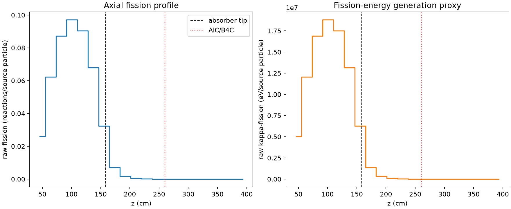
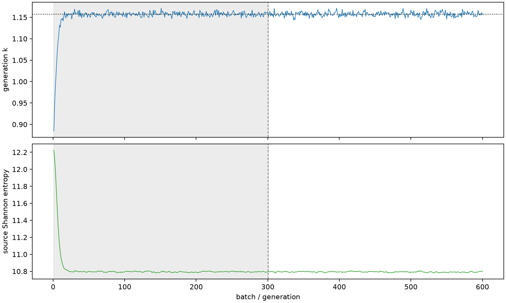

| field | value |
|---|---|
| experiment | V2-STAGE_256_OGRENCI_03-0011 |
| k | 1.1572729409265077 |
| MC standard error | 0.0001976154682194717 |
| seconds | 1144.1740499610023 |
| acceptance | not_assessed |
| convergence | review_required |
Completed is output integrity only; physical and statistical review required. Zero tallies do not prove zero production or zero uncertainty.
| diagnostic | value |
|---|---|
| geometric fuel voxels | 5280 |
| zero fission tally voxels | 1313 |
| low signal fuel voxels | 2371 |
| low signal fission share | 9.317552607112044e-05 |
| low signal kappa share | 9.321456073769254e-05 |
| important fission share | 0.9500363481293903 |
| previous filter included | 2909 |
| duration estimate s | 1562.5173488400023 |
| actual minus estimate s | -418.34329887900003 |
| fission relative MC error | statistics |
|---|---|
| all_geometric_fuel | {"voxels": 5280, "positive_mean_voxels": 3967, "zero_mean_voxels": 1313, "undefined_relative_error_voxels": 1313, "median": 0.01930857537941239, "p95": 0.9324020387744989, "maximum": 1.0000000000000002} |
| low_signal | {"voxels": 2371, "positive_mean_voxels": 1058, "zero_mean_voxels": 1313, "undefined_relative_error_voxels": 1313, "median": 0.5503694940562451, "p95": 1.0, "maximum": 1.0000000000000002} |
| important_95pct | {"voxels": 1700, "positive_mean_voxels": 1700, "zero_mean_voxels": 0, "undefined_relative_error_voxels": 0, "median": 0.006281388770823066, "p95": 0.010098939300522395, "maximum": 0.011258182957308691} |
| outside_previous_filter | {"voxels": 2371, "positive_mean_voxels": 1058, "zero_mean_voxels": 1313, "undefined_relative_error_voxels": 1313, "median": 0.5503694940562451, "p95": 1.0, "maximum": 1.0000000000000002} |
| kappa_fission relative MC error | statistics |
|---|---|
| all_geometric_fuel | {"voxels": 5280, "positive_mean_voxels": 3967, "zero_mean_voxels": 1313, "undefined_relative_error_voxels": 1313, "median": 0.019283121448818358, "p95": 0.9319600486104765, "maximum": 1.0000000000000002} |
| low_signal | {"voxels": 2371, "positive_mean_voxels": 1058, "zero_mean_voxels": 1313, "undefined_relative_error_voxels": 1313, "median": 0.5504169951752562, "p95": 1.0, "maximum": 1.0000000000000002} |
| important_95pct | {"voxels": 1700, "positive_mean_voxels": 1700, "zero_mean_voxels": 0, "undefined_relative_error_voxels": 0, "median": 0.00627442202370309, "p95": 0.010087085145410811, "maximum": 0.011242423452862936} |
| outside_previous_filter | {"voxels": 2371, "positive_mean_voxels": 1058, "zero_mean_voxels": 1313, "undefined_relative_error_voxels": 1313, "median": 0.5504169951752562, "p95": 1.0, "maximum": 1.0000000000000002} |
| axial bin | fission share | kappa-fission share |
|---|---|---|
| 1 | 0.054907977349661095 | 0.054909853163724494 |
| 2 | 0.13171939729516066 | 0.13171787675576546 |
| 3 | 0.18446985903233823 | 0.18446714550477947 |
| 4 | 0.20545290075485753 | 0.20544984010891343 |
| 5 | 0.1913493184507959 | 0.19134659127945272 |
| 6 | 0.14385788845953196 | 0.14385592668493422 |
| 7 | 0.06837429296203253 | 0.06837771274763782 |
| 8 | 0.014802687582258603 | 0.014807592217170578 |
| 9 | 0.0037732976047230725 | 0.003774597293033811 |
| 10 | 0.0009520426391772469 | 0.0009523844516679302 |
| 11 | 0.0002456037004261001 | 0.00024570616600436845 |
| 12 | 7.074746210744749e-05 | 7.077327528364125e-05 |
| 13 | 1.8861294661733342e-05 | 1.8872121622292822e-05 |
| 14 | 4.103523213180991e-06 | 4.105873660375533e-06 |
| 15 | 9.399111434719306e-07 | 9.403618983983399e-07 |
| 16 | 8.197791135400874e-08 | 8.199445105527046e-08 |
| 17 | 0.0 | 0.0 |
| 18 | 0.0 | 0.0 |
| 19 | 0.0 | 0.0 |
| 20 | 0.0 | 0.0 |
Histories include the inactive-to-active transition at batch 300. kappa-fission approximates fission energy production, not total heat deposition.

